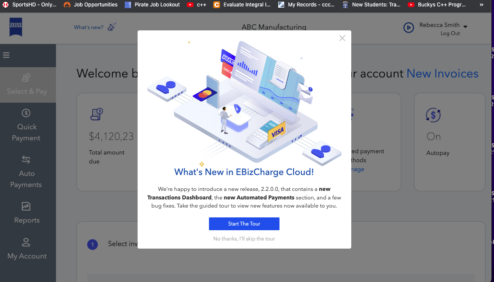

Portfolio
Internship Work
Overview: At my internship at Century Business Solutions I applied so
much of the conceptual knowledge I learned through school and
independent work. It was a great first oppurtunity for me to showcase
the quality work I am capable of.
Responsibilities
I particpated and contributed in all meetings in each phase of the>
Software Development Lifecycle. We would have meetings for each of the
SDLC phases so requirments gathering meetings, planning meetings,
development meetings, testing meetings, and all the way through till
deployment meetings.
As a Front End Developer Intern, I was constantly in contact with our
UX/UI designers and other team members so I could get a strong
understanding of what needed to be developed. Once I developed code
for the wireframes I was presented I would go to our team members for
feedback. Once the UX/UI designers signed off I would ask my
supervisor how thing looked. Any time feedback was given for
improvement I would go to the code and adjust whatever needed to be
adjusted. Once the website resembled the wireframes exactly or very
closely we would pass it onto QA for testing.
I also customized invoices for Century Buisness Solutions merchants.
We had a default template that would be sent out from our merchants to
their cusotomers when a purchase was made. However we allowed our
merchants to customize these templates however they wanted. I was
designated with the task of customizing these invoices to the
satisfaction of our merchants.
Things I learned while interning at Century Business Solutions:
Understanding the ASP.NET Framework and the different components that
can be included in it
Learn how to use Kendo UI and incorporate it into an a file
Learn how different phases of the software development lifecycle are
carried out
Learn how to use Boostrap so our website could be responsive and adapt
to any device that it is being view on
Understand how to use jquery helping allow for nice dynamic features
on the website
How to use software engineering tools like Jira, Zeplin, Figma and
Adobe XD, to facilitate project management and design
Work Assignments and Projects
I was given a challenge to design the company website. I was to replicate the design pretty much pixel perfect to what was expected and I was able to do that
1 / 4

Century Business Solutions Web Tour
3 / 4

Caption Three
4 / 4

Caption Four
❮
❯
School Projects